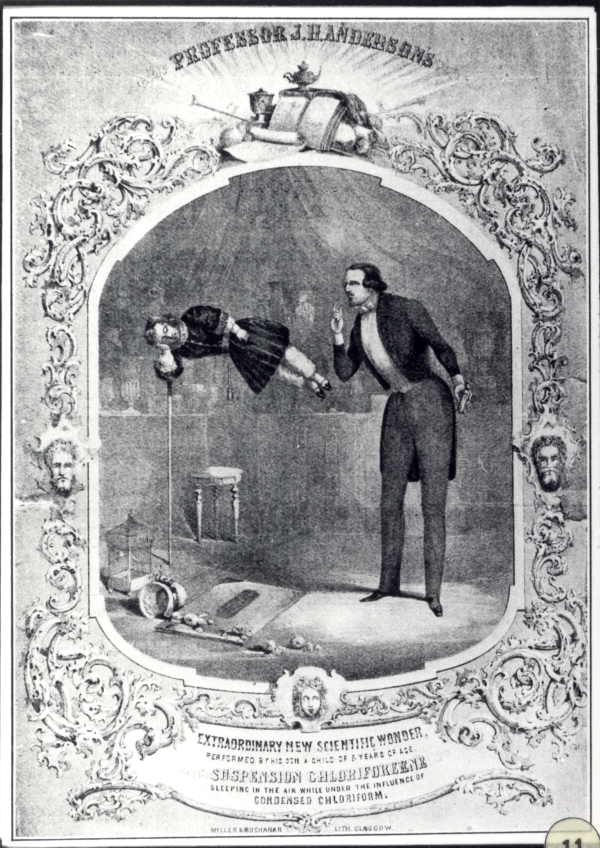

Sunday, February the 25th, 2007
back to: title, date or indexes
Tiny Enid knew how vitally important it is to take an afternoon nap. Because she was so often engaged in thrilling adventures, which usually involved kicking someone's head in, she did not always find it easy to lull herself to sleep. As this rare picture shows, she was as resourceful a girl when it came to naps as she was when bashing up Prince Fulgencio's evil henchmen.

Suspension Chloriforeene from the State Library of Victoria, via Boynton